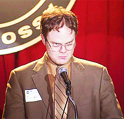

"Blood alone moves the wheels of history! Have you ever asked yourselves in an hour of meditation, which everyone finds during the day, how long we have been striving for greatness? Not only the years we've been at war, the war of work, but from the moment as a child when we realized that the world could be conquered. It has been a lifetime struggle. A never-ending fight. I say to you, and you will understand that it is a privilege to fight! We are warriors! Salesmen of north-eastern Pennsylvania, I ask you once more: Rise and be worthy of this historical hour! No revolution is worth anything if it cannot defend itself! Some people will tell you salesman is a bad word. They'll conjure up images of used car dealers and door to door charlatans. This is our duty: to change their perception. I say salesmen... and women of the world unite! We must never acquiesce for it is together, TOGETHER, THAT WE PREVAIL! We must never cede control of the motherland!"
— Dwight Schrute